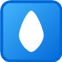

Quad Road Network
Generate high-quality all-quad mesh road networks from centerlines. Perfect for SubD workflows.
Landscape Terrain
Create smooth, flowing "Class-A" terrain surfaces from contours or points using relaxation.
Scatter System
Rule-based distribution of trees and furniture along paths or surfaces.
Minimal Surface
Create minimal surfaces from boundary curves using relaxation algorithms.
Rhino Picker
Directly filter and select Rhino objects by Layer, Name, or Type in GH.
Wooly Path Optimizer
Bio-mimetic Slime Mold algorithm for finding organic, efficient path networks.
Slope Analysis
Real-time slope visualization with color gradients for terrain assessment.

Hydrology Analysis
Simulate surface water runoff and identify drainage paths using steepest descent.